栏目管理
一、前言
栏目管理-用来管理用户规划的栏目。
二、栏目管理
- 2.1栏目管理
-
栏目管理有以下几个步骤：
第一、在添加新的类系和栏目前，确定是否设置[关闭自动生成节点]： 在管理后台 -> 模板风格 ->模板管理->基本设置->模板相关设置中的选中关闭自动生成节点为否，如图-10所示。
是否设定[关闭自动生成节点]为值为否的条件
1.某应用系统（如：汽车系统，房产系统，通用产品库系统等）已内定有规则即当添加相关类目后会自动生成相关的节点并设置[节点配置方案]。
2.判断某体系统是否已设内定规则可参考各应用系统的[绑定节点说明]文档。
3.用户自行添加的[节点配置方案]，在添加栏目自动生成节点时不会自已绑定该节点配置方案。
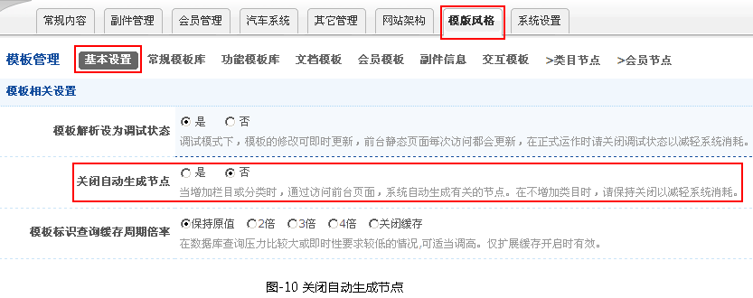
第二、添加栏目（网站架构->类目管理->栏目管理），有三种方式：添加栏目（单个）、批量添加栏目、添加子栏目，如图-11所示。
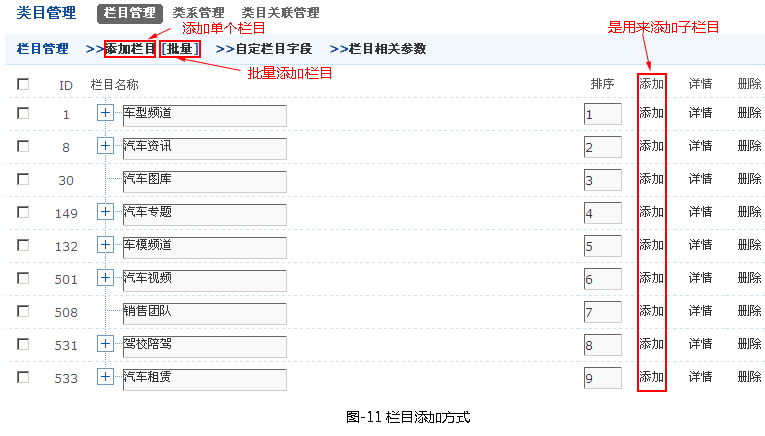
第一种、添加栏目（单个）（网站架构->类目管理->栏目管理）->添加栏目），如图-12所示。
注意:
1. 栏目标识命名规则：由字母、数字、及 _组成，请以字母开头，字符数不大于15，字母为小写，名称唯一，设定后不可更改。
2. 结构栏目：只允许内建子栏目，不允许添加文档及合辑。
3. 多选项目请配合Ctrl、Shift键进行多选或反选。
4. 有关权限、折扣、出售、奖励及扣分等设置，对栏目内的文档及合辑有效，但设置不会继承到子栏目。
5. 各积分选项在〖网站架构〗→〖积分设置〗里设置。
6. 各权限方案选项在〖系统设置〗→〖方案管理〗→〖权限管理〗设置。
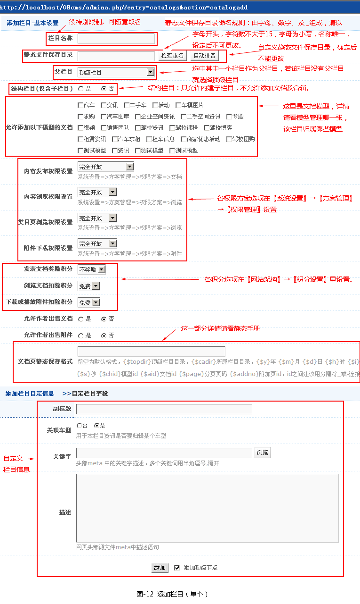
第二种、批量添加栏目（网站架构->类目管理->栏目管理）->批量）。
1.点击批量链接，进入批量栏目设置，如图-13所示。
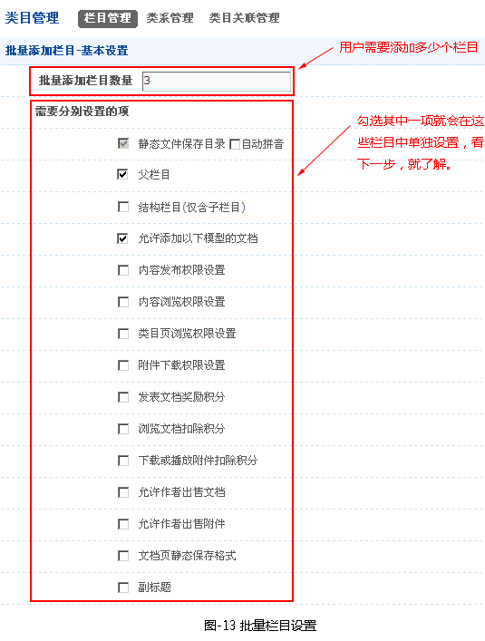
2.点击批量栏目设置按钮，跳到批量添加栏目页面，如图-14所示。
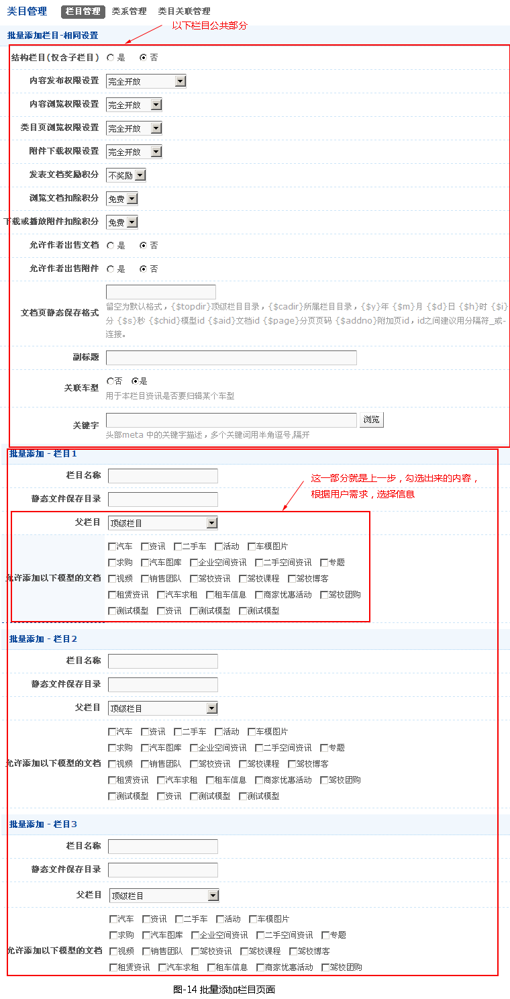
第三种：添加子栏目，添加好父栏目后，在相应栏目中点击添加链接，子栏目会自动继承父栏目模型属性。添加过程与单个添加栏目一样。
- 2.2为栏目添加管理权限
-
添加完栏目后，这些栏目就会在常规内容左侧栏中显示，如图-16所示。

为栏目添加管理权限有以下步骤：
1.点击系统设置->管理后台->管理节点->常规内容区中节点设置链接，如图-17所示。
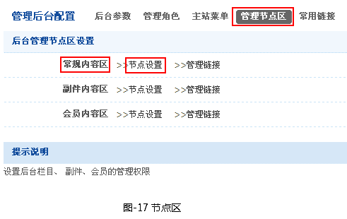
2.常规管理区节点设置，如图-18所示。
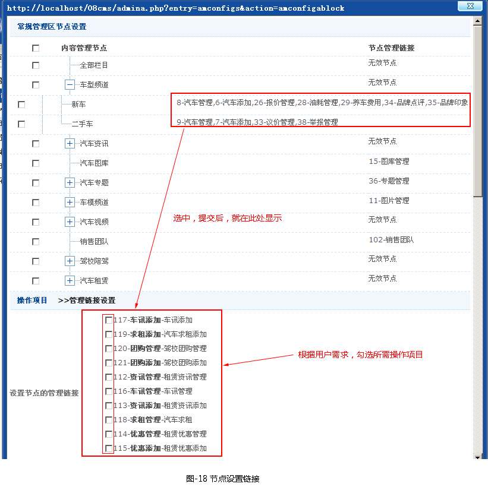
三、绑定栏目模板
添加完栏目后，开始配置节点，为栏目绑定相应的模板。
- 3.1添加节点配置
-
1.在添加类目节点之前，就先看一下是否有添加好节点配置，其主要用来绑定模板，另外，查看该模板必须存在，若不存在，就到模板风格->模板管理->类目节点添加相应的模板（如图-23所示）。
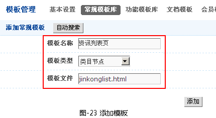
2.点击网站架构->节点配置管理-》添加节点配置(这是其中一种方法，还可以手动配置，因为前一种方法比较实用)(如图-24所示)。
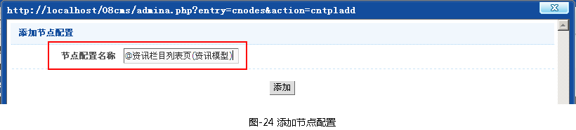
3.配置节点(如图-25所示)。
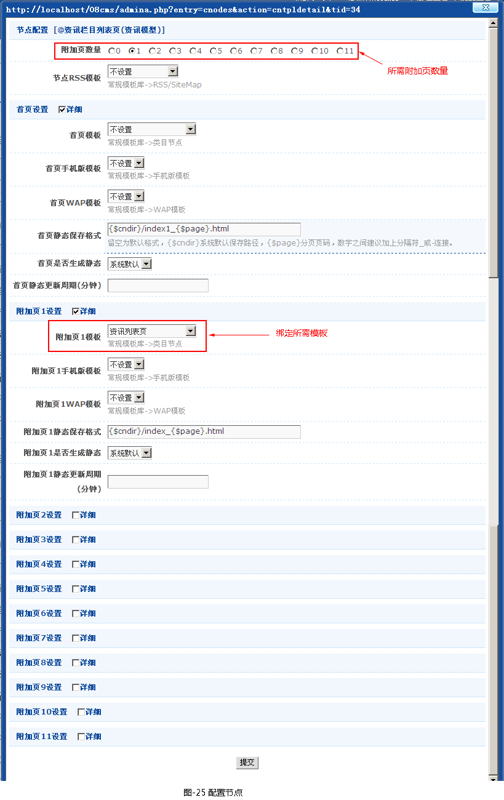
a. 〖附加页数量〗：设置的模板的附加页数量。
b.〖首页模板〗选择你要设置的模板。
c. 〖首页WAP模板〗：选择你要设置的模板
d.〖首页静态保存格式〗填写你想生成静态的规则。
e.〖首页是否生成静态〗:是否生成静态开关。
f.〖首页静态更新周期(分钟)〗：填写数字，属于缓存机制，用于优化系统性能。
- 3.2添加节点组成方案
-
1.配置好节点后，就点击网站架构->类目节点-》节点组成方案(如图-26所示)。
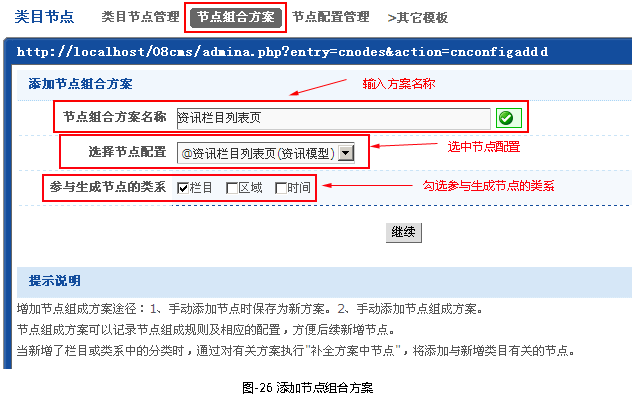
2.节点组成方案设置(如图-27所示)
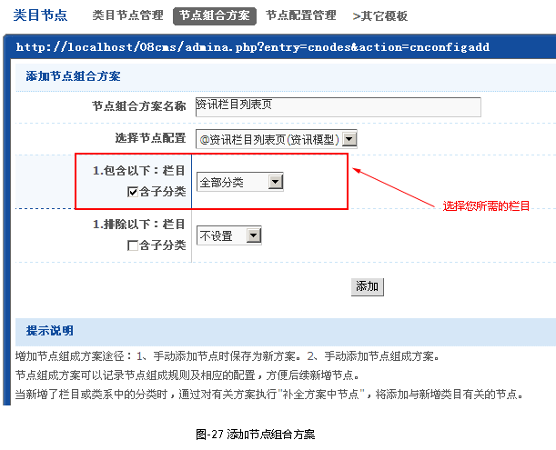
2.筛选类目节点(如图-28所示)
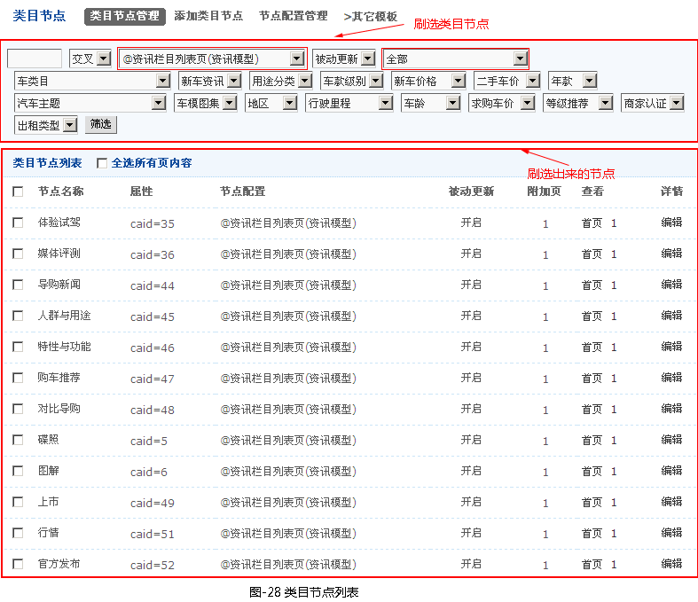